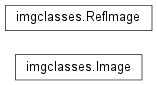

Image Class¶
Classes to keep track of all WCS and catalog information.
Used by TweakReg.
| Authors: | Warren Hack, Mihai Cara |
|---|---|
| License: | http://www.stsci.edu/resources/software_hardware/pyraf/LICENSE |
-
class
drizzlepac.imgclasses.Image(filename, input_catalogs=None, exclusions=None, **kwargs)[source]¶ Bases:
objectPrimary class to keep track of all WCS and catalog information for a single input image. This class also performs all matching and fitting.
Parameters: filename : str
Filename for image.
input_catalogs : list of str or None
Filename of catalog files for each chip, if specified by user.
kwargs : dict
Parameters necessary for processing derived from input configObj object.
-
buildSkyCatalog()[source]¶ Convert sky catalog for all chips into a single catalog for the entire field-of-view of this image.
-
get_shiftfile_row()[source]¶ Return the information for a shiftfile for this image to provide compatability with the IRAF-based MultiDrizzle.
-
get_wcs()[source]¶ Helper method to return a list of all the input WCS objects associated with this image.
-
match(refimage, quiet_identity, **kwargs)[source]¶ Uses xyxymatch to cross-match sources between this catalog and a reference catalog (refCatalog).
-
performFit(**kwargs)[source]¶ Perform a fit between the matched sources.
Parameters: kwargs : dict
Parameter necessary to perform the fit; namely, fitgeometry.
Notes
- This task still needs to implement (eventually) interactive iteration of
- the fit to remove outliers.
-
sortSkyCatalog()[source]¶ Sort and clip the source catalog based on the flux range specified by the user. It keeps a copy of the original full list in order to support iteration.
-
transformToRef(ref_wcs, force=False)[source]¶ Transform sky coords from ALL chips into X,Y coords in reference WCS.
-
updateHeader(wcsname=None, reusename=False)[source]¶ Update header of image with shifts computed by perform_fit().
-
-
class
drizzlepac.imgclasses.RefImage(wcs_list, catalog, xycatalog=None, cat_origin=None, **kwargs)[source]¶ Bases:
objectThis class provides all the information needed by to define a reference tangent plane and list of source positions on the sky.
Warning
When
wcs_listis a Python list ofWCSobjects, each element must be an instance ofstwcs.wcsutil.HSTWCS.-
get_shiftfile_row()[source]¶ Return the information for a shiftfile for this image to provide compatability with the IRAF-based MultiDrizzle.
-